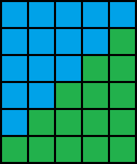

W poprzedniej części obecnej lekcji zaimplementowałeś funkcję liczącą sumy ciągu arytmetycznego w dwóch wersjach: iteracyjnym i rekurencyjnym. W obu przypadkach komputer musiał wykonać mniej więcej tyle dodawań ile wynosiła liczba n. Jednak tę sumę da się wyliczyć stosując tylko parę operacji arytmetycznych (mnożeń, dzieleń dodawań, odejmowań). Spójrz na poniższy rysunek i spróbuj wymyślić wzór:
Zadaniem w tej części jest zaimplementować funkcję liczącą sumę ciągu arytmetycznego. Jednak w przeciwieństwie do poprzedniej części funkcja powinna wykonywać tylko parę operacji arytmetycznych.
Po zakończeniu implementowania tej funkcji porównaj swoje rozwiązanie z funkcją wzorcową. Oczywiście, jeśli z powyższego rysunku nie wysnujesz żadnych wniosków, to możesz skorzystać z licznych podpowiedzi.